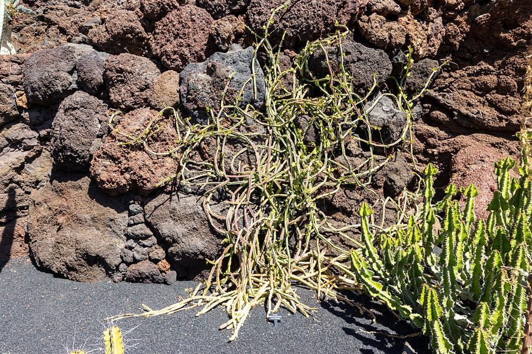

हड़जोड़Veld Grape
Cissus quadrangularis · Vitaceae · FLR-0249

- Scientific name वैज्ञानिक नाम
- Cissus quadrangularis L.
- Family कुल
- Vitaceae
- Hindi हिंदी
- हड़जोड़
- Local names स्थानीय नाम
- hadjod, harjod, hadjora, veld grape
- Status here यहाँ की स्थिति
- native
- Movement आवागमन
- Resident, here all year
- Known from कहाँ दर्ज
- Others have published records from the wider Awadh–Purvanchal plain, none yet from Basti–Ayodhya अवध–पूर्वांचल से दूसरों के प्रकाशित अभिलेख, बस्ती–अयोध्या से अभी नहीं
- IUCN IUCN
- not evaluated
- Review समीक्षा
- audited and independently read
When to look कब देखें
Present all year. साल भर मौजूद।
Uses and possibilities उपयोग और संभावनाएँ
“Traditional medicine” means a documented traditional use, not a claim that it works. Nothing on this page is medical advice.
Drawn from the documented uses in the profile below, where each is labelled traditional, current or a research lead. All uses →
हड़जोड़ / Veld Grape
Cissus quadrangularis L. — Vitaceae
हड़जोड़ (अस्थिसंहारक, "बोन सेटर") — एक हल्का, चढ़ने वाला बेल जो बाड़ों, झाड़ियों और उजाड़ ज़मीन पर आसानी से बढ़ता है। इसका नाम संस्कृत शब्द "अस्थिसंहारक" से आता है, जिसका अर्थ है "हड्डियों को जोड़ने वाला", क्योंकि आयुर्वेद में इसे फ्रैक्चर और हड्डी संबंधी समस्याओं के लिए पारंपरिक रूप से उपयोग किया जाता है। तने चौकोर, बिना मोती के (नॉन-बेरीड), लाल या हरे होते हैं। पत्तियाँ तीन-पत्रक (ट्राइफोलिएट) होती हैं, जो गर्मी में भी ताज़ी रहती हैं। छोटे, हरे-पीले फूल गर्मियों में दिखते हैं।
Quick Identification त्वरित पहचान
| Feature | Description |
|---|---|
| Plant habit | Climbing vine, semi-woody, 1–3 m or more, branching loosely |
| Stems | Four-angled or quadrangular, smooth, reddish or greenish, succulent when young |
| Leaves | Trifoliate (three leaflets); leaflets ovate-oblong, 4–12 cm, margins toothed or entire |
| Tendrils | Present opposite leaves, coiling, helping the plant climb |
| Flowers | Small (3–5 mm), greenish-yellow, in clusters at leaf axils |
| Fruits | Round berries, 0.8–1.2 cm, red turning purple-black, containing 2–4 seeds |
Field tip: Look on fences, hedges, or abandoned structures for a climbing vine with distinctive four-sided stems. The trifoliate leaves and red berries are good confirmatory features. The stem is noticeably angular in cross-section.
हिंदी — कैसे पहचानें: चढ़ने वाली बेल, चौकोर तना, तीन पत्तियों की व्यवस्था, लाल फल।
Morphology आकारिकी
Biometrics:
| Measurement | Range |
|---|---|
| Shoot length | 1–3 m (or more) |
| Leaf (petiole + leaflets) length | 8–20 cm |
| Leaflet length | 4–12 cm |
| Leaflet width | 2–8 cm |
| Flower diameter | 3–5 mm |
| Berry diameter | 0.8–1.2 cm |
Stems: Young stems smooth, green, becoming lignified, with four prominent angles or wings. The quadrangular shape is the defining character.
Leaves: Opposite, trifoliate, with a winged or narrowly winged petiole. Leaflets ovate-oblong, margins serrate or entire, venation reticulate.
Flowers: Small, polygamous, bisexual and male flowers on the same plant. Calyx small; petals four, reflexed at anthesis; stamens four, opposite the petals; ovary is two-chambered with two ovules per chamber.
Fruits: Round to slightly flattened berries, with a waxy bloom, red when immature, turning dark purple or black when ripe. Seeds two (rarely three), obovate.
हिंदी: तना चौकोर, हल्का-फुल्का, तीन पत्तियों की व्यवस्था, लाल फल बरसात के बाद।
Behaviour & Ecology व्यवहार और पारिस्थितिकी
A light, semi-woody climbing vine of hedges and scrubland, thriving in disturbed ground with available support. It climbs by coiling tendrils and grows vigorously during and after the monsoon. The vine is drought-tolerant once established and sheds its leaves partially during extreme dry spells to conserve water. The berries are eaten by birds and small mammals, which disperse the seeds. The plant has a long lifespan and thick, tuberous underground structures that can regenerate if the aerial parts are damaged.
हिंदी: तेज़ी से बढ़ता है, किसी भी सहारे पर चढ़ जाता है, सूखा सहन कर सकता है, जड़ें गहरी होती हैं।
Life Cycle / Phenology जीवन चक्र
| Month / season | Event |
|---|---|
| April–May | Dormancy or slow growth in hot, dry season |
| June–August | Rapid growth during monsoon; new leaves flush pale |
| August–October | Flowering; fruit set begins |
| October–November | Fruit ripens; berries turn dark; peak flowering continues |
| December–March | Fruiting continues; gradual leaf fall in late winter |
The plant is long-lived and perennial; large specimens may persist for many years.
हिंदी: मई में आराम, बरसात में तेज़ी, गर्मी के फूल, सर्दी में फल पकते हैं।
Associated Species / Interactions संबंधित प्रजातियाँ
- Climbing companions: Field Bindweed, periploca aphylla on fences and hedges
- Fruit dispersers: House Sparrow, Jungle Babbler visit for berries
- Shade-giving companions: often shares hedges with Neem, ficus species
Pests and Diseases कीट और रोग
Occasionally attacked by leaf-eating beetles and caterpillars during the monsoon, but not seriously. Powdery mildew may affect leaves in humid weather but does not threaten the vine's survival.
Agricultural / Human Relevance कृषि प्रासंगिकता
Agricultural impact. No major agricultural significance; found mainly on hedges and fence lines rather than in crop fields. May climb fruit trees if allowed.
Ethnobotanical use (documented traditional knowledge; not medical advice). In Ayurvedic medicine, the entire plant, including the tender stems and leaves, is used in decoctions, powders, and preparations. The Sanskrit name Asthisamharaka literally means "bone joiner", reflecting its traditional use for bone fractures, sprains, and musculoskeletal injuries. Classical texts list it for bone health, inflammation, and digestive complaints. The plant is also used in traditional medicine of South and Southeast Asia for similar purposes.
Today. Commercially cultivated in some Ayurvedic regions and sold as dried plant material, powder, and extract. Increasingly incorporated into herbal bone and joint health supplements.
Research direction (a lead, not a result). The plant contains various phytochemicals including flavonoids, tannins, and alkaloids. Some published research has investigated potential bone-protective and anti-inflammatory effects in cell and animal models; human clinical trials remain limited.
हिंदी: आयुर्वेद में हड्डियों के लिए बहुत प्रसिद्ध है, आजकल दवाई में भी मिलता है, पर गाँवों में कम जाना जाता है।
Expected Locally स्थानीय रूप से अपेक्षित
Not a field record. Written from published accounts for eastern Uttar Pradesh. No confirmed local sighting yet — if you have seen it, that is what the atlas needs.
अभी तक स्थानीय पुष्टि नहीं। यह विवरण प्रकाशित स्रोतों से है, किसी अवलोकन से नहीं।
GBIF holds published records from the wider Awadh–Purvanchal plain. To be expected on hedges, fence lines, and scrubby waste ground. Likely present but not yet formally recorded from the core region.
Distribution वितरण
Global range: Native to tropical and subtropical Asia; found from South Asia through Southeast Asia and into China.
In India: Widespread across the Indo-Gangetic plain and in peninsular India, particularly in drier regions.
In Uttar Pradesh: Found in scattered locations, particularly in hedges and disturbed ground.
In Basti district / eastern UP: Likely present in hedge systems but not yet formally confirmed.
Research Questions शोध प्रश्न
Anyone can investigate these | कोई भी इन प्रश्नों की जाँच कर सकता है
- Where do you find Cissus quadrangularis in your village, and how old are the plants? / आपके गाँव में हड़जोड़ कहाँ है, और कितना पुराना है? — Map hedges and estimate age by size.
- Is the four-angled stem really unique, and does it have any ecological advantage? / चौकोर तना सचमुच अलग है? — Compare growth angles with related Vitis species.
- Which birds and animals eat the berries, and where do they go? / कौन से पक्षी फल खाते हैं? — Watch fruiting vines for 30 minutes in November.
- Is it still used in any household remedy locally? / क्या कोई इसे घर के इलाज में इस्तेमाल करता है? — Ask in ten households and to local herbal practitioners.
- How deep do the roots go, and what biomass is stored underground? — Dig out an old plant in dry season.
Similar Species मिलती-जुलती प्रजातियाँ
| Species | How to tell apart | हिंदी |
|---|---|---|
| Wild grape (Vitis spp.) | Leaves usually lobed or palmately veined, not trifoliate; berries similar but plant has woody tendrils | अंगूर, पत्तियाँ अलग तरह की |
| Ivy species (Hedera spp.) | Climbing by adventitious rootlets, not tendrils; leaves ovate-oblong but not trifoliate | आइवी, जड़ों से चढ़ता है |
Field rule: A climbing vine with distinctive four-angled or quadrangular stems and trifoliate (three-leafed) leaves is Cissus quadrangularis.
Taxonomy & Classification वर्गीकरण
Original description. Described by Linnaeus in 1753 in Species Plantarum. The epithet quadrangularis refers to the four-angled stems.
Subspecies. Monotypic — no subspecies are currently recognised.
Family and order placement. Vitaceae (the grape family), order Vitales. A genus of about 350 climbing or trailing vines found mainly in tropical and subtropical regions.
Phylogenetic notes. Cissus is closely related to Vitis (the grape genus) and other Vitaceae; some taxonomists have suggested merging the genera, though they remain distinct.
IUCN status rationale. Not evaluated. Widespread, particularly in disturbed habitats. No conservation concern.
Photo Gallery फोटो गैलरी
Photos needed आवश्यक फोटो
- [ ] Whole vine on a fence or tree, October (पूरी बेल बाड़ पर)
- [ ] Stems close-up showing quadrangular shape (तने का विस्तार)
- [ ] Trifoliate leaves and red berries (पत्तियाँ और फल)
No photos yet — add field photos to media/species/veld_grape/ and run node scripts/sync_photos.js.
References संदर्भ
- Linnaeus, C. (1753). Species Plantarum, ed. 2. Stockholm. [original description]
- Hooker, J.D. (1875). The Flora of British India, vol. 1. L. Reeve, London. (Cissus)
- Duthie, J.F. (1903). Flora of the Upper Gangetic Plain and of the Adjacent Siwalik and Sub-Himalayan Tracts. Government Printing, Calcutta.
- Bhava Prakasha (translated Sharma & Das, 2010). Bhava Prakasha of Bhava Misra. Chowkhambha Sanskrit Series, Varanasi.
- Kirtikar, K.R. & Basu, B.D. (1935). Indian Medicinal Plants, 2nd ed., vol. 1. Lalit Mohan Basu, Allahabad.
- GBIF Occurrence Data — Cissus quadrangularis, India (2026).
Source file: species/flora/climbers/veld_grape.md